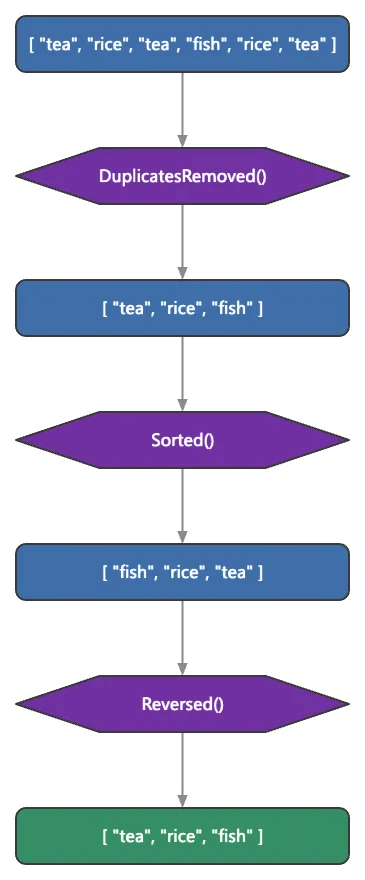

Collections et objets
Un pipeline fonctionnel porté par le moteur et une racine d'objet réflexive ; le stockage boxé plafonne la vitesse des opérations d'ensembles.
6 Strong · 5 Solid · 1 Partial · 0 Emerging
Mesuré contre : Lodash · Immutable.js · standard libraries · Dossiers : base/list · base/object · Le guide des fonctions de ce domaine

Repensé depuis les premiers principes
Ce que Softanza a gardé de ce qui marche, et ce qu'elle a repensé, tel que la bibliothèque l'a écrit dans ses documents de conception et ses narrations.
La manière SoftanzaLes mêmes questions — contient-elle, combien, où — et les mêmes verbes valent pour toute structure ; seule l'unité de position change.
Gardé des meilleures pratiques
- La vérité par défaut reste celle de la plateforme : le vide est faux, la présence est vraie ; IsTrue() se comporte exactement comme le test natif. source
- Garde la discipline habituelle de lecture sûre : vérifier qu'une clé existe (HasKey, HasPath) avant de la lire, pour qu'une lecture ne crée jamais en silence une entrée vide. source
Repensé
- Chaînes et listes répondent aux mêmes verbes — Contains, NumberOfOccurrence, FindAll — et StzFind accepte l'une ou l'autre : une seule façon de penser couvre toutes les structures. source
- La forme d'une méthode dit son effet : Remove() modifie l'objet, Removed() renvoie une copie modifiée, RemoveQ() enchaîne ; les effets de bord se lisent dans le nom. source
- La vérité se configure : IsTrueXT() permet de déclarer quels éléments ou mots rendent une liste ou une chaîne fausse, au lieu d'une règle figée « vide égale faux ». source
- Un objet peut garder l'histoire de ses changements : QH() enregistre chaque étape d'une chaîne, car une transformation ne laisse d'ordinaire aucune trace de son parcours. source
One of the largest surfaces in the library: ~155 list operations in a 6,500-line Zig core behind a 1,600-method Haro face, a functional pipeline, deep-path search, Lodash-grade grouping, and a reflective object root that 449 classes inherit, tuned for millions of items with measured residency wins. Two honest limits keep it short of the very top: boxed value storage holds raw set-op throughput an order of magnitude below NumPy/native, and there are no persistent immutable structures.
Ce qu'un maker en fait, et ce qui se distingue
- String-expression predicates run inside the engine, which the peers cannot do
- A deep-path search API that Lodash get only approximates
- A reflective object root 449 classes inherit, with Q-elevation and the Verb/Verbed/VerbQ grammar
- Measured residency wins at 1M items: 2.6x read-reuse, Classify -51%, Union -34%
Ce qui est dû
- Finish the list narration / fidelity grind (312 of ~602 legacy blocks error)
- Unboxed typed storage for native-speed set-ops
- Complete the residency migration (Slices 4 and 5, ~32 marshal-in sites)
- Persistent immutable collections with structural sharing
La manière Softanza, exécutée
Ce que Softanza fait autrement dans ce domaine, montré par du code tiré de ses narrations et de ses gardes, et exécuté pour cette page.
Une même fonction trouve une valeur dans une chaîne ou dans une liste ; seule l'unité change, caractères ou éléments.
? @@( StzFind("tea", "tea rice tea fish") )
? @@( StzFind("tea", [ "tea", "rice", "tea", "fish" ]) )[ 1, 10 ] [ 1, 3 ]
exécuté le 2026-10-01 21:17 dans la bibliothèque au commit 0e72e2e2c ; tiré de base/education/program/courses/elementary-introduction/chapters/05-one-object-any-structure.en.md
Une chaîne de transformations garde son historique : la valeur de départ et le résultat de chaque étape.
? @@( QH("1 AA 2 B 3 CCC 4 DD 5 Z").
RemoveCharsWQ('Q(@Char).IsNumberInString()').
RemoveSpacesQ().
RemoveDuplicatedCharsQ().
History() )[ "1 AA 2 B 3 CCC 4 DD 5 Z", " AA B CCC DD Z", "AABCCCDDZ", "ABCDZ" ]
exécuté le 2026-10-01 21:17 dans la bibliothèque au commit 0e72e2e2c ; tiré de base/test/string/466_keeping_the_history_of_updates_of_a_softanza_objec.ring
La vérité se configure : une fois « no » et « off » déclarés comme marqueurs, une chaîne qui en contient un compte comme fausse.
SetSubStringsMakingAStringFalse([ "no", "off" ])
Then("a string carrying a marker is FALSE", IsTrueXT("no way"), FALSE)
Then("...and IsFalseXT says so", IsFalseXT("no way"), TRUE)
Then("a string without one is still TRUE", IsTrueXT("Hello"), TRUE)THEN a string carrying a marker is FALSE [PASS] THEN ...and IsFalseXT says so [PASS] THEN a string without one is still TRUE [PASS]
exécuté le 2026-10-01 21:17 dans la bibliothèque au commit 0e72e2e2c ; tiré de base/test/func/00_func_narrated.ring
Les couloirs, un par un
Les couloirs et leurs notes sont cités tels qu'ils ont été lus à la source, le Read from the source on 2026-09-16.